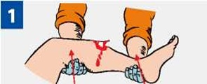
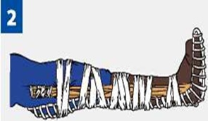
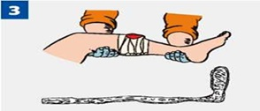
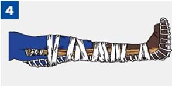
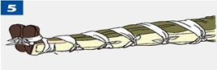
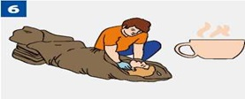

ПРАВИЛА ИММОБИЛИЗАЦИИ (ОБЕЗДВИЖИВАНИЯ)

|
Иммобилизация выполняется с обездвиживанием двух соседних суставов, расположенных выше и ниже места перелома. |

|
В качестве иммобилизующего средства можно использовать шины или плоские узкие предметы: палки, доски, линейки, прутья, фанеру, картон и др. Острые края и углы шин из подручных средств должны быть сглажены, обмотаны бинтом. После наложения шину необходимо зафиксировать бинтами или пластырем. При переломах шину накладывают поверх одежды и обуви. |

|
При открытых переломах нельзя прикладывать шину к местам, где выступают наружу костные отломки. |

|
Шину на всем протяжении (исключая уровень перелома) плотно прикрепить к конечностям бинтом, но не очень туго, чтобы не нарушалось кровообращение. При переломе нижней конечности шины накладывать с двух сторон. |

|
При отсутствии шин или подручных средств поврежденную ногу можно иммобилизировать, прибинтовав ее к здоровой ноге, а руку — к туловищу. |

|
Защити пострадавшего от переохлаждения, дай обильное теплое сладкое питьё. |
Источник:
http://www.culture.mchs.gov.ru/medical/algorithms_of_first_aid_to_victims_of_traumatic_injuries_and_urgent_situations/rules_of_immobilization_immobilization/
ТЕЛЕФОН СЛУЖБЫ СПАСЕНИЯ: 112